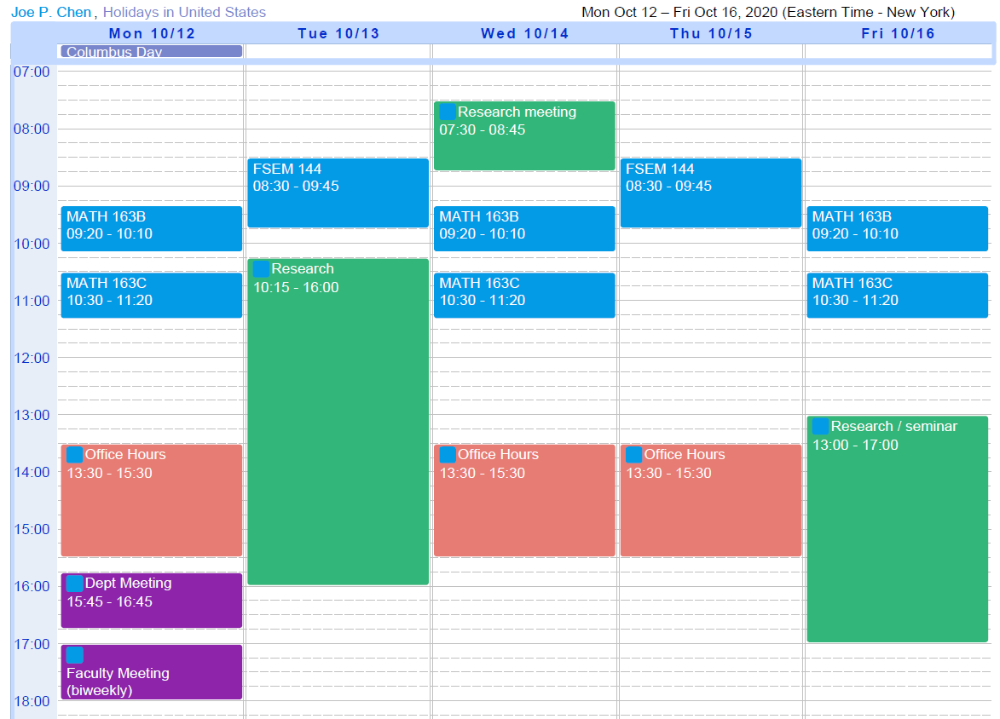

Joe P. Chen's Appointment Scheduler
Fall 2020: My weekly schedule
Effective 08/31/2020~11/20/2020, subject to minor changes

Office Hours: MWR 1:30p-3:30p, open to all students in my classes.
I will be "off-line" until mid-August to concentrate on paper and grant writing.
The only scheduled interactions are: meet with current collaborators to finish projects; meet Colgate colleagues on essential administrative discussions; and attend select virtual probability seminars.
Other than the above, I do not have time to participate in additional activities.
Please accept my apology in advance if I decline your request, e.g. to referee papers outside my current research focus, interacting particle systems.
For incoming and returning Colgate students:
Please read the Drop/Add information carefully.
For FSEM 144A Students: Here's the landing page specifically for first-year students.
If you have questions on course selection, email me and I will try to get back to you within 24 hours.
Have questions about course selection during Drop/Add? If you need help beyond what is posted, then email me.
Again I will try to get back to you within 24 hours.
All other questions? Please hold off until after August 16, thank you.
Useful Seminar information:
mathseminars.org
Christina Goldschmidt's list of online probability seminars
Back to JPC's homepage